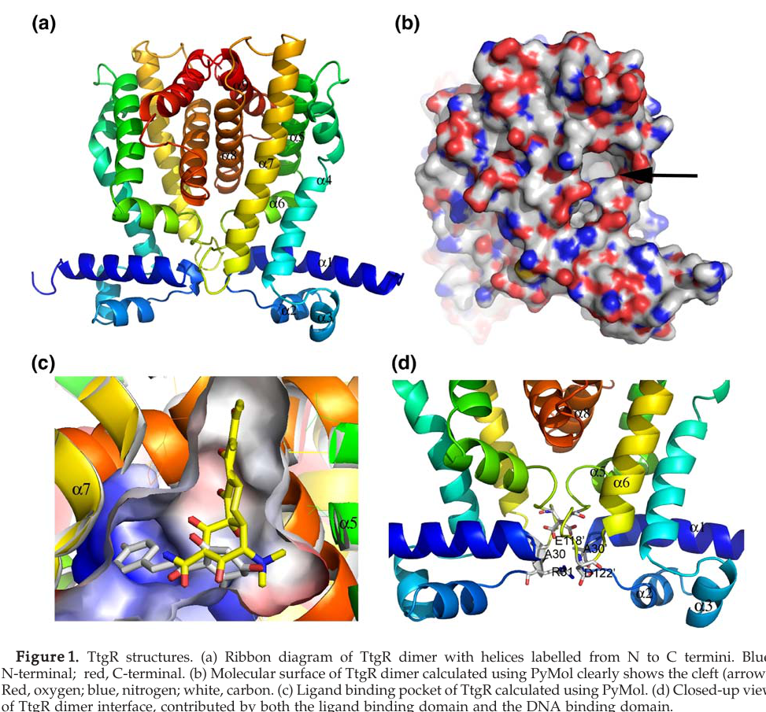

ttgR encodes a TetR-family HTH transcriptional repressor that controls expression of the adjacent ttgABC RND efflux pump locus in Pseudomonas putida KT2440. KT2440-specific studies establish the physiological importance of the regulated pump in resistance to antibiotics, bipyridyl chelators, bile salts, and other toxic compounds, while direct biochemical work on the closely related DOT-T1E ortholog shows that TtgR binds an operator overlapping the ttgR/ttgABC promoters and undergoes ligand-responsive dissociation from DNA. The safest synthesis for KT2440 is therefore that TtgR is a local DNA-binding transcription repressor for multidrug efflux, with detailed ligand specificity still requiring direct testing in this strain.
| GO Term | Evidence | Action | Reason |
|---|---|---|---|
|
GO:0000976
transcription cis-regulatory region binding
|
IEA
GO_REF:0000118 |
ACCEPT |
Summary: This annotation is consistent with TtgR being a TetR-family DNA-binding repressor that recognizes the ttgR-ttgABC intergenic operator region. It captures a core molecular function and is more informative than the generic DNA-binding parent term.
Reason: TtgR is a TetR-family local regulator of the ttgR-ttgABC promoter/operator region; transcription cis-regulatory region binding is the directly supported and most informative DNA-binding molecular function. Falcon deep research confirms TtgR binds a pseudo-palindromic operator that overlaps the divergent ttgR/ttgA promoters, and that two TtgR dimers can bind the operator cooperatively.
Supporting Evidence:
file:PSEPK/ttgR/ttgR-uniprot.txt
DE AltName: Full=Efflux pump ttgABC operon regulator;
file:PSEPK/ttgR/ttgR-notes.md
In Pseudomonas putida DOT-T1E, TtgR is the local repressor of the divergently transcribed ttgABC efflux pump operon and its own ttgR promoter.
file:PSEPK/ttgR/ttgR-deep-research-falcon.md
TtgR binds a pseudo-palindromic operator overlapping the divergent promoters, and **two TtgR dimers** can bind cooperatively to the operator DNA
|
|
GO:0003677
DNA binding
|
IEA
GO_REF:0000002 |
KEEP AS NON CORE |
Summary: TtgR is clearly DNA-binding, but this parent term is too broad to represent the curated core function once more specific transcription-regulatory binding terms are available.
Reason: DNA binding is true for this HTH regulator but is less specific than the transcription cis-regulatory region binding term, so it should be retained only as a broad non-core parent.
Supporting Evidence:
file:PSEPK/ttgR/ttgR-uniprot.txt
DR InterPro; IPR001647; HTH_TetR.
file:PSEPK/ttgR/ttgR-notes.md
ttgR (PP_1387, UniProt Q88N29) encodes a 210 aa TetR-family HTH transcriptional regulator annotated by UniProt as the efflux pump ttgABC operon regulator.
file:PSEPK/ttgR/ttgR-deep-research-falcon.md
an **N-terminal HTH DNA-binding domain** (α1–α3; residues 1–53) and a **C-terminal ligand-binding domain** (α4–α9; residues 54–210)
|
|
GO:0003700
DNA-binding transcription factor activity
|
IEA
GO_REF:0000120 |
MODIFY |
Summary: The general transcription-factor term is directionally correct, but TtgR is specifically a bacterial transcriptional repressor, not a generic transcription factor. A more precise child term should be used.
Reason: Falcon deep research describes TtgR's primary function as repression of the ttgABC operon via operator binding, with ligand binding lowering DNA affinity to derepress the pump. The repressor child term GO:0001217 is therefore more precise than the generic transcription-factor parent.
Proposed replacements:
DNA-binding transcription repressor activity
Supporting Evidence:
file:PSEPK/ttgR/ttgR-notes.md
A conservative curation view for KT2440 is therefore: TtgR is a DNA-binding transcriptional repressor that negatively regulates transcription of the ttgABC multidrug efflux locus; ligand-responsive derepression is strongly supported by the DOT-T1E ortholog, while the exact effector repertoire in KT2440 remains an open question because at least one key binding-pocket residue differs between strains.
file:PSEPK/ttgR/ttgR-deep-research-falcon.md
**TtgR** is best understood as a **TetR-family helix–turn–helix (HTH) transcriptional repressor**
|
|
GO:0006355
regulation of DNA-templated transcription
|
IEA
GO_REF:0000120 |
MODIFY |
Summary: TtgR does regulate transcription, but the term is too general because the best-supported direction is repression. The more specific negative-regulation child term should replace it.
Reason: Falcon deep research consistently frames TtgR as a repressor that keeps ttgABC transcription off under basal conditions, releasing only upon effector binding. The negative-regulation child term captures this best-supported direction.
Proposed replacements:
negative regulation of DNA-templated transcription
Supporting Evidence:
file:PSEPK/ttgR/ttgR-notes.md
A conservative curation view for KT2440 is therefore: TtgR is a DNA-binding transcriptional repressor that negatively regulates transcription of the ttgABC multidrug efflux locus; ligand-responsive derepression is strongly supported by the DOT-T1E ortholog, while the exact effector repertoire in KT2440 remains an open question because at least one key binding-pocket residue differs between strains.
file:PSEPK/ttgR/ttgR-deep-research-falcon.md
**primary function** is repression of **ttgABC** transcription via operator binding in the **ttgR/ttgA intergenic region**
|
|
GO:0045892
negative regulation of DNA-templated transcription
|
IEA
GO_REF:0000117 |
ACCEPT |
Summary: This is the most appropriate existing biological-process annotation. TtgR acts as a local repressor of the ttgABC efflux operon and likely autoregulates ttgR itself, based on orthologous biochemical evidence and conserved locus organization.
Supporting Evidence:
file:PSEPK/ttgR/ttgR-notes.md
A conservative curation view for KT2440 is therefore: TtgR is a DNA-binding transcriptional repressor that negatively regulates transcription of the ttgABC multidrug efflux locus; ligand-responsive derepression is strongly supported by the DOT-T1E ortholog, while the exact effector repertoire in KT2440 remains an open question because at least one key binding-pocket residue differs between strains.
file:PSEPK/ttgR/ttgR-deep-research-falcon.md
In the presence of specific toxic compounds (effectors/ligands), TtgR’s DNA-binding affinity decreases, enabling **upregulation of efflux pump expression**
file:PSEPK/ttgR/ttgR-deep-research-falcon.md
TtgR also autoregulates from the divergent **ttgR/ttgA intergenic region**
|
Q: Which antibiotics, chelators, bile salts, or plant metabolites directly bind KT2440 TtgR and trigger derepression of ttgABC?
Q: Does KT2440 TtgR autoregulate its own promoter through the same overlapping operator architecture characterized in the DOT-T1E ortholog?
Q: How much of the KT2440 toxic-compound resistance phenotype is directly TtgR-mediated versus imposed by higher-level regulators such as ECF-10?
Experiment: Purify KT2440 TtgR and quantify binding to the ttgR-ttgABC intergenic DNA by EMSA or fluorescence anisotropy in the presence of chloramphenicol, tetracycline, bipyridyls, bile salts, and candidate plant antimicrobials
Hypothesis: KT2440 TtgR directly binds the local operator and is dissociated by a restricted but biologically relevant set of toxic compounds.
Experiment: Measure ttgABC and ttgR promoter activity in wild type, delta-ttgR, and complemented strains during exposure to antibiotics, bipyridyl chelators, and bile salts
Hypothesis: Loss of ttgR causes constitutive derepression of the ttgABC locus, while specific compounds induce promoter activity in a TtgR-dependent manner.
Experiment: Combine RNA-seq with ChIP-qPCR or ChIP-seq for KT2440 TtgR under inducing and non-inducing conditions
Hypothesis: TtgR directly occupies the local ttgR-ttgABC control region and may regulate only a small local regulon rather than a broad global stress program.
The research report should be a detailed narrative explaining the function, biological processes, and localization of the gene product. Citations should be given for all claims.
You should prioritize authoritative reviews and primary scientific literature when conducting research. You can supplement
this with annotations you find in gene/protein databases, but these can be outdated or inaccurate.
We are specifically interested in the primary function of the gene - for enzymes, what reaction is catalyzed, and what is the substrate specificity? For transporters, what is the substrate? For structural proteins or adapters, what is the broader structural role? For signaling molecules, what is the role in the pathway.
We are interested in where in or outside the cell the gene product carries out its function.
We are also interested in the signaling or biochemical pathways in which the gene functions. We are less interested in broad pleiotropic effects, except where these elucidate the precise role.
Include evidence where possible. We are interested in both experimental evidence as well as inference from structure, evolution, or bioinformatic analysis. Precise studies should be prioritized over high-throughput, where available.
The gene symbol ttgR in Pseudomonas putida KT2440 maps to locus PP_1387 and sits divergently adjacent to the ttgABC efflux operon (PP_1386/PP_1385/PP_1384 = ttgA/ttgB/ttgC), consistent with the UniProt record context provided (Q88N29; regulator of ttgABC). This KT2440 mapping is stated explicitly in a KT2440-focused efflux pump dissertation and is consistent with a KT2440 transcriptomics study referencing PP_1387/ttgR as the operon regulator. (stein2023navigatingpyoverdineand pages 31-34, tettmann2014knockoutofextracytoplasmic pages 5-6)
TtgR is best understood as a TetR-family helix–turn–helix (HTH) transcriptional repressor. TetR-family regulators typically (i) bind an operator sequence via an N-terminal HTH DNA-binding domain, (ii) form dimers, and (iii) undergo allosteric changes upon small-molecule effector binding that reduce DNA affinity, thereby derepressing target genes. For TtgR specifically, structural and biochemical work describes a canonical TetR-like architecture with an N-terminal DNA-binding domain and a C-terminal ligand-binding/dimerization domain, and a largely α-helical fold. (daniels2010domaincrosstalkduring pages 1-2, alguel2007crystalstructuresof pages 1-2, santiago2015desarrollodeprocesos pages 54-58)
The ttgABC operon encodes a tripartite RND-family efflux pump (inner-membrane transporter + membrane fusion protein + outer-membrane channel) that contributes to intrinsic and inducible tolerance/resistance to chemically diverse toxic compounds. Within KT2440, TtgABC is described as a multidrug efflux system with experimental evidence supporting broad substrate export, and its name is historically linked to toluene tolerance (“ttg”). (tettmann2014knockoutofextracytoplasmic pages 5-6, stein2023navigatingpyoverdineand pages 31-34)
TtgR’s primary function is repression of ttgABC transcription via operator binding in the ttgR/ttgA intergenic region. In the presence of specific toxic compounds (effectors/ligands), TtgR’s DNA-binding affinity decreases, enabling upregulation of efflux pump expression and increased tolerance to those compounds. (daniels2010domaincrosstalkduring pages 1-2, daniels2010domaincrosstalkduring pages 2-3, stein2023navigatingpyoverdineand pages 34-43)
Biochemical characterization indicates TtgR binds a pseudo-palindromic operator overlapping the divergent promoters, and two TtgR dimers can bind cooperatively to the operator DNA. This cooperativity is consistent with tight repression under basal conditions and a switch-like derepression upon effector binding. (daniels2010domaincrosstalkduring pages 2-3)
TtgR binds and responds to chemically diverse effectors, including:
- Antibiotics such as tetracycline and chloramphenicol (also linked to derepression/induction of ttgABC). (alguel2007crystalstructuresof pages 2-4, alguel2007crystalstructuresof pages 9-11, stein2023navigatingpyoverdineand pages 34-43)
- Plant antimicrobials / flavonoids, including quercetin, naringenin, and phloretin. (alguel2007crystalstructuresof pages 2-4, alguel2007crystalstructuresof pages 9-11)
A key structural generalization from crystallographic analysis is that ligands share at least one aromatic ring feature, consistent with a hydrophobic binding environment. (alguel2007crystalstructuresof pages 2-4)
KT2440-focused synthesis describes TtgABC as associated with efflux/tolerance to toluene, multiple antibiotics (e.g., chloramphenicol, carbenicillin, tetracycline, erythromycin, nalidixic acid), and additional compound classes (e.g., bile salts/deoxycholate and bipyridyl derivatives) in the broader KT2440 efflux literature summary. (stein2023navigatingpyoverdineand pages 31-34)
Crystallography shows each TtgR monomer contains nine α-helices organized into two domains: an N-terminal HTH DNA-binding domain (α1–α3; residues 1–53) and a C-terminal ligand-binding domain (α4–α9; residues 54–210). (alguel2007crystalstructuresof pages 1-2)
Structural and mutational work supports two distinct but overlapping ligand-binding sites within a large, largely hydrophobic pocket. One site is broader/hydrophobic; the other is deeper and more polar. The effector-binding cavity is described as lined by hydrophobic residues (e.g., Leu-66, Val-96, Phe-168, Val-171) with polar residues at the pocket bottom (e.g., Asn-110, His-114, Asp-172). (daniels2010domaincrosstalkduring pages 2-3, alguel2007crystalstructuresof pages 1-2)
Visual structural evidence (ligand pocket and representative ligands) is shown in the extracted figures from Alguel et al. 2007, including overall dimer architecture and ligand interaction panels. (alguel2007crystalstructuresof media 18c56565, alguel2007crystalstructuresof media 99d9985c)
Reported quantitative parameters include:
- Crystal structure resolution for antibiotic complexes (e.g., tetracycline/chloramphenicol) at 2.7 Å. (alguel2007crystalstructuresof pages 2-4)
- Pocket volume ~1500 ų and DNA-recognition helix separation reported as 42 Š(structural geometry consistent with TetR-like regulators). (alguel2007crystalstructuresof pages 2-4)
- Apparent ligand-binding affinities reported in the range of K_D ~10–50 μM (from biophysical assays such as ITC). (alguel2007crystalstructuresof pages 9-11)
Mutational studies provide strong mechanistic evidence for inter-domain communication: substitutions within the ligand-binding pocket can alter both effector response and DNA-binding affinity, supporting an allosteric pathway from ligand binding → conformational change → decreased operator binding. Quantitatively, reported operator-binding differences include 3-fold stronger binding (L66A) and 15-fold stronger binding (L66AV96A) compared with wild type, whereas H67A binds ~3-fold weaker than wild type. (daniels2010domaincrosstalkduring pages 1-2, daniels2010domaincrosstalkduring pages 9-10)
TtgR functions as a cytosolic DNA-binding transcription factor, acting at the chromosomal ttgR/ttgA promoter-operator region. Its downstream regulated system, TtgABC, is a cell-envelope spanning efflux pump (inner membrane/outer membrane-associated tripartite assembly). (daniels2010domaincrosstalkduring pages 1-2, tettmann2014knockoutofextracytoplasmic pages 5-6)
In KT2440, experimental work connecting the ttgABC locus to phenotypes indicates:
- Overexpression of ttgABC can increase biofilm formation by ~25%, and deletion/inactivation of ttgABC modulates antibiotic susceptibility. (tettmann2014knockoutofextracytoplasmic pages 5-6)
- TtgABC is implicated in resistance/susceptibility to multiple antibiotics including ciprofloxacin, meropenem, chloramphenicol, nalidixic acid, sulfamethoxazole (increased susceptibility when TtgABC is inactivated). (tettmann2014knockoutofextracytoplasmic pages 5-6)
- The efflux inhibitor PAβN (phenyl-arginine-β-naphthylamide; 10 μg/mL in the cited assay context) can eliminate certain biofilm differences linked to efflux activity, supporting efflux-dependent phenotypes. (tettmann2014knockoutofextracytoplasmic pages 5-6)
While the cited KT2440 transcriptome study focuses on an ECF sigma-factor knockout background, it explicitly identifies ttgR (PP_1387) as the regulator of ttgABC and demonstrates locus-level dysregulation of the ttgABC/ttgR region with downstream phenotypic consequences tied to efflux activity. (tettmann2014knockoutofextracytoplasmic pages 5-6)
A KT2440 study cites prior observations that ttgABC expression can rise ~3–4-fold in response to some antibiotics (e.g., chloramphenicol, tetracycline), consistent with an inducible efflux response. (tettmann2014knockoutofextracytoplasmic pages 5-6)
A 2023 KT2440-focused dissertation consolidates the organization and broad substrate associations of TtgABC and explicitly states ttgR = PP_1387 as the upstream repressor with antibiotic-inducible activity, describing release from DNA upon exposure to hydrophobic antibiotics (example: chloramphenicol). It also notes that mutations in ttgR are associated with upregulated TtgABC expression in multidrug-resistant isolates, consistent with TtgR’s role as a repressor gatekeeper. (stein2023navigatingpyoverdineand pages 31-34, stein2023navigatingpyoverdineand pages 34-43)
A 2024 study in Biotechnology for Biofuels and Bioproducts implements a TtgR-based resveratrol biosensor in E. coli in which TtgR controls mCherry expression in response to resveratrol produced by an engineered pathway. The study reports:
- Resveratrol production of ~160 mg/L in the described strain context (linked to their biosensor-enabled workflow). (chen2024ultrahighthroughputscreeningassistedin pages 8-11)
- A FACS-based selection step where 5,000 cells were collected at a 0.592‰ sorting threshold, with >60% of sorted cells showing improved fluorescence relative to the starting strain. (chen2024ultrahighthroughputscreeningassistedin pages 8-11)
- Selected retransformed strains showing resveratrol titers more than twice that of the control group, supporting real utility of the TtgR biosensor for production screening/optimization. (chen2024ultrahighthroughputscreeningassistedin pages 8-11)
This represents a notable “latest research” development: TtgR’s natural ligand promiscuity and operator logic are repurposed into an in vivo metabolite–fluorescence coupling for directed evolution / pathway improvement. (chen2024ultrahighthroughputscreeningassistedin pages 8-11)
Although KT2440 is non-pathogenic, TtgR regulates an RND efflux system that exports antibiotics and other antimicrobials, and the TtgR/TtgABC axis is routinely discussed as a model for understanding efflux-mediated resistance and its regulation via ligand-responsive repressors. The key translational concept is that efflux regulation and ligand recognition contribute to multidrug tolerance, motivating structural and mechanistic studies of regulators like TtgR. (daniels2010domaincrosstalkduring pages 1-2, alguel2007crystalstructuresof pages 2-4)
| Aspect | Key findings | Evidence/citations |
|---|---|---|
| Identity | UniProt Q88N29 corresponds to TtgR / PP_1387 in Pseudomonas putida KT2440; KT2440 literature places ttgR (PP_1387) immediately adjacent to and regulating the ttgABC efflux operon. | (stein2023navigatingpyoverdineand pages 31-34, tettmann2014knockoutofextracytoplasmic pages 5-6) |
| Protein family/domains | TtgR is a TetR-family HTH-type transcriptional repressor. Structural work describes a 210-aa, largely α-helical, dimeric regulator with an N-terminal DNA-binding HTH domain and a C-terminal ligand-binding/dimerization domain. | (daniels2010domaincrosstalkduring pages 1-2, alguel2007crystalstructuresof pages 1-2, santiago2015desarrollodeprocesos pages 54-58) |
| Regulated genes/operon | TtgR represses the ttgABC operon, encoding an RND-family tripartite efflux pump (ttgA/PP_1386, ttgB/PP_1385, ttgC/PP_1384). TtgR also autoregulates from the divergent ttgR/ttgA intergenic region. | (daniels2010domaincrosstalkduring pages 1-2, daniels2010domaincrosstalkduring pages 2-3, stein2023navigatingpyoverdineand pages 31-34, tettmann2014knockoutofextracytoplasmic pages 5-6) |
| Mechanism | In the absence of effectors, TtgR binds a pseudo-palindromic operator overlapping the ttgR/ttgA promoters; two TtgR dimers bind cooperatively. Effector binding triggers conformational changes that lower DNA affinity and derepress ttgABC transcription. | (daniels2010domaincrosstalkduring pages 2-3, daniels2010domaincrosstalkduring pages 9-10, santiago2015desarrollodeprocesos pages 54-58) |
| Ligands/inducers | Reported effectors include antibiotics (tetracycline, chloramphenicol), flavonoids/plant antimicrobials (quercetin, naringenin, phloretin), and aromatic/toxic compounds. A common feature is usually at least one aromatic ring. | (alguel2007crystalstructuresof pages 2-4, alguel2007crystalstructuresof pages 9-11, alguel2007crystalstructuresof pages 1-2) |
| Structural/biophysical quantitative data | Crystal structures were solved for ligand complexes including tetracycline and chloramphenicol at 2.7 Å; ligand-binding pocket volume is about 1500 ų; DNA-recognition helices are separated by 42 Å; apparent ligand K_D ~10–50 μM. TtgR has two overlapping ligand-binding sites (broad hydrophobic and deeper polar). | (alguel2007crystalstructuresof pages 2-4, alguel2007crystalstructuresof pages 9-11, alguel2007crystalstructuresof pages 1-2, alguel2007crystalstructuresof media 18c56565) |
| Phenotypes/quantitative data | Loss of ttgR causes pump overproduction and increased resistance to carbenicillin, chloramphenicol, nalidixic acid, tetracycline. In KT2440, ttgABC overexpression increased biofilm formation by about 25%, while pump inactivation increased susceptibility to ciprofloxacin, meropenem, chloramphenicol, nalidixic acid, sulfamethoxazole. Some antibiotics induce ttgABC ~3–4-fold. | (daniels2010domaincrosstalkduring pages 1-2, daniels2010domaincrosstalkduring pages 9-10, tettmann2014knockoutofextracytoplasmic pages 5-6) |
| Localization | TtgR is a cytosolic DNA-binding regulator acting at the chromosomal ttgR/ttgABC promoter region; its functional output controls the cell-envelope-associated TtgABC RND efflux pump. | (daniels2010domaincrosstalkduring pages 1-2, daniels2010domaincrosstalkduring pages 2-3, tettmann2014knockoutofextracytoplasmic pages 5-6) |
Table: This table summarizes the core functional annotation of TtgR (Q88N29/PP_1387) in Pseudomonas putida KT2440, including identity, mechanism, ligands, quantitative structural data, phenotypes, and localization. It is useful as a compact evidence map linking KT2440 locus information to mechanistic and structural literature.
References
(stein2023navigatingpyoverdineand pages 31-34): Nicola Victoria Maria Stein. Navigating pyoverdine and beyond: the role of tripartite efflux pumps in pseudomonas putida kt2440. Dissertation, Jan 2023. URL: https://doi.org/10.5282/edoc.32605, doi:10.5282/edoc.32605. This article has 1 citations.
(tettmann2014knockoutofextracytoplasmic pages 5-6): Beatrix Tettmann, Andreas Dötsch, Olivier Armant, Christopher D. Fjell, and Joerg Overhage. Knockout of extracytoplasmic function sigma factor ecf-10 affects stress resistance and biofilm formation in pseudomonas putida kt2440. Aug 2014. URL: https://doi.org/10.1128/aem.01291-14, doi:10.1128/aem.01291-14. This article has 38 citations and is from a peer-reviewed journal.
(daniels2010domaincrosstalkduring pages 1-2): Craig Daniels, Abdelali Daddaoua, Duo Lu, Xiaodong Zhang, and Juan-Luis Ramos. Domain cross-talk during effector binding to the multidrug binding ttgr regulator. Journal of Biological Chemistry, 285:21372-21381, Jul 2010. URL: https://doi.org/10.1074/jbc.m110.113282, doi:10.1074/jbc.m110.113282. This article has 33 citations and is from a domain leading peer-reviewed journal.
(alguel2007crystalstructuresof pages 1-2): Yilmaz Alguel, Cuixiang Meng, Wilson Terán, Tino Krell, Juan L. Ramos, María-Trinidad Gallegos, and Xiaodong Zhang. Crystal structures of multidrug binding protein ttgr in complex with antibiotics and plant antimicrobials. Journal of Molecular Biology, 369:829-840, Jun 2007. URL: https://doi.org/10.1016/j.jmb.2007.03.062, doi:10.1016/j.jmb.2007.03.062. This article has 163 citations and is from a domain leading peer-reviewed journal.
(santiago2015desarrollodeprocesos pages 54-58): CA Molina Santiago. Desarrollo de procesos biotecnológicos basados en cepas de pseudomonas putida: mecanismos de señalización y biosíntesis de antibióticos. Unknown journal, 2015.
(daniels2010domaincrosstalkduring pages 2-3): Craig Daniels, Abdelali Daddaoua, Duo Lu, Xiaodong Zhang, and Juan-Luis Ramos. Domain cross-talk during effector binding to the multidrug binding ttgr regulator. Journal of Biological Chemistry, 285:21372-21381, Jul 2010. URL: https://doi.org/10.1074/jbc.m110.113282, doi:10.1074/jbc.m110.113282. This article has 33 citations and is from a domain leading peer-reviewed journal.
(stein2023navigatingpyoverdineand pages 34-43): Nicola Victoria Maria Stein. Navigating pyoverdine and beyond: the role of tripartite efflux pumps in pseudomonas putida kt2440. Dissertation, Jan 2023. URL: https://doi.org/10.5282/edoc.32605, doi:10.5282/edoc.32605. This article has 1 citations.
(alguel2007crystalstructuresof pages 2-4): Yilmaz Alguel, Cuixiang Meng, Wilson Terán, Tino Krell, Juan L. Ramos, María-Trinidad Gallegos, and Xiaodong Zhang. Crystal structures of multidrug binding protein ttgr in complex with antibiotics and plant antimicrobials. Journal of Molecular Biology, 369:829-840, Jun 2007. URL: https://doi.org/10.1016/j.jmb.2007.03.062, doi:10.1016/j.jmb.2007.03.062. This article has 163 citations and is from a domain leading peer-reviewed journal.
(alguel2007crystalstructuresof pages 9-11): Yilmaz Alguel, Cuixiang Meng, Wilson Terán, Tino Krell, Juan L. Ramos, María-Trinidad Gallegos, and Xiaodong Zhang. Crystal structures of multidrug binding protein ttgr in complex with antibiotics and plant antimicrobials. Journal of Molecular Biology, 369:829-840, Jun 2007. URL: https://doi.org/10.1016/j.jmb.2007.03.062, doi:10.1016/j.jmb.2007.03.062. This article has 163 citations and is from a domain leading peer-reviewed journal.
(alguel2007crystalstructuresof media 18c56565): Yilmaz Alguel, Cuixiang Meng, Wilson Terán, Tino Krell, Juan L. Ramos, María-Trinidad Gallegos, and Xiaodong Zhang. Crystal structures of multidrug binding protein ttgr in complex with antibiotics and plant antimicrobials. Journal of Molecular Biology, 369:829-840, Jun 2007. URL: https://doi.org/10.1016/j.jmb.2007.03.062, doi:10.1016/j.jmb.2007.03.062. This article has 163 citations and is from a domain leading peer-reviewed journal.
(alguel2007crystalstructuresof media 99d9985c): Yilmaz Alguel, Cuixiang Meng, Wilson Terán, Tino Krell, Juan L. Ramos, María-Trinidad Gallegos, and Xiaodong Zhang. Crystal structures of multidrug binding protein ttgr in complex with antibiotics and plant antimicrobials. Journal of Molecular Biology, 369:829-840, Jun 2007. URL: https://doi.org/10.1016/j.jmb.2007.03.062, doi:10.1016/j.jmb.2007.03.062. This article has 163 citations and is from a domain leading peer-reviewed journal.
(daniels2010domaincrosstalkduring pages 9-10): Craig Daniels, Abdelali Daddaoua, Duo Lu, Xiaodong Zhang, and Juan-Luis Ramos. Domain cross-talk during effector binding to the multidrug binding ttgr regulator. Journal of Biological Chemistry, 285:21372-21381, Jul 2010. URL: https://doi.org/10.1074/jbc.m110.113282, doi:10.1074/jbc.m110.113282. This article has 33 citations and is from a domain leading peer-reviewed journal.
(chen2024ultrahighthroughputscreeningassistedin pages 8-11): Shuaili Chen, Zhanhao Yang, Ze Zhong, Shiqin Yu, Jingwen Zhou, Jianghua Li, Guocheng Du, and Guoqiang Zhang. Ultrahigh-throughput screening-assisted in vivo directed evolution for enzyme engineering. Biotechnology for Biofuels and Bioproducts, Jan 2024. URL: https://doi.org/10.1186/s13068-024-02457-w, doi:10.1186/s13068-024-02457-w. This article has 25 citations and is from a domain leading peer-reviewed journal.
(zhang2023applicationofmetaboliteresponsive pages 7-9): Jianli Zhang, Xinyu Gong, Qi Gan, and Yajun Yan. Application of metabolite-responsive biosensors for plant natural products biosynthesis. Biosensors, 13:633, Jun 2023. URL: https://doi.org/10.3390/bios13060633, doi:10.3390/bios13060633. This article has 17 citations.
(alguel2007crystalstructuresof media 8bbbe2ab): Yilmaz Alguel, Cuixiang Meng, Wilson Terán, Tino Krell, Juan L. Ramos, María-Trinidad Gallegos, and Xiaodong Zhang. Crystal structures of multidrug binding protein ttgr in complex with antibiotics and plant antimicrobials. Journal of Molecular Biology, 369:829-840, Jun 2007. URL: https://doi.org/10.1016/j.jmb.2007.03.062, doi:10.1016/j.jmb.2007.03.062. This article has 163 citations and is from a domain leading peer-reviewed journal.

ttgR (PP_1387, UniProt Q88N29) encodes a 210 aa TetR-family HTH transcriptional regulator annotated by UniProt as the efflux pump ttgABC operon regulator. The sequence carries canonical TetR-family DNA-binding and regulatory domains. [UniProt Q88N29]
In Pseudomonas putida DOT-T1E, TtgR is the local repressor of the divergently transcribed ttgABC efflux pump operon and its own ttgR promoter. ttgABC and ttgR are expressed at a moderate basal level, increase in the presence of hydrophobic antibiotics such as chloramphenicol and tetracycline, and purified TtgR binds a palindromic operator that overlaps both promoters and dissociates in the presence of antibiotics. [PMID:14506010 Antibiotic-dependent induction of Pseudomonas putida DOT-T1E TtgABC efflux pump is mediated by the drug binding repressor TtgR]
Structural work on the DOT-T1E protein showed that TtgR recognizes multiple antibiotics and plant antimicrobials and contains two distinct but overlapping ligand-binding sites. The deeper binding pocket includes Arg176, which the authors note is unique to the DOT-T1E strain and absent from other Pseudomonas strains, so the exact ligand spectrum should not be assumed to be identical in KT2440 without direct testing. [PMID:17466326 Crystal structures of multidrug binding protein TtgR in complex with antibiotics and plant antimicrobials]
In KT2440, the ttgABC/ttgR locus is present as PP_1384-PP_1387, and ttgABC function is clearly relevant to multidrug and toxic-compound resistance. ttgABC and ttgR were both upregulated in an ECF-10 mutant, and the resulting TtgABC-dependent phenotype increased resistance to ciprofloxacin, meropenem, chloramphenicol, nalidixic acid, and sulfamethoxazole, while also contributing to heat tolerance, oxidative-stress tolerance, and biofilm formation. [PMID:24907323 Knockout of Extracytoplasmic Function Sigma Factor ECF-10 Affects Stress Resistance and Biofilm Formation in Pseudomonas putida KT2440]
KT2440-specific work also showed that TtgABC protects cells against metal-chelating bipyridyl compounds, caerulomycin A, bile salts, and deoxycholate. This paper experimentally targeted ttgB, not ttgR, so it supports the native physiological role of the regulated efflux pump more directly than it supports any specific effector spectrum for KT2440 TtgR itself. [PMID:32973714 Resistance to Bipyridyls Mediated by the TtgABC Efflux System in Pseudomonas putida KT2440]
A conservative curation view for KT2440 is therefore: TtgR is a DNA-binding transcriptional repressor that negatively regulates transcription of the ttgABC multidrug efflux locus; ligand-responsive derepression is strongly supported by the DOT-T1E ortholog, while the exact effector repertoire in KT2440 remains an open question because at least one key binding-pocket residue differs between strains. [PMID:14506010 Antibiotic-dependent induction of Pseudomonas putida DOT-T1E TtgABC efflux pump is mediated by the drug binding repressor TtgR; PMID:17466326 Crystal structures of multidrug binding protein TtgR in complex with antibiotics and plant antimicrobials; PMID:24907323 Knockout of Extracytoplasmic Function Sigma Factor ECF-10 Affects Stress Resistance and Biofilm Formation in Pseudomonas putida KT2440]
id: Q88N29
gene_symbol: ttgR
aliases:
- PP_1387
product_type: PROTEIN
status: DRAFT
taxon:
id: NCBITaxon:160488
label: Pseudomonas putida (strain ATCC 47054 / DSM 6125 / CFBP 8728 / NCIMB 11950
/ KT2440)
description: >-
ttgR encodes a TetR-family HTH transcriptional repressor that controls expression
of the adjacent ttgABC RND efflux pump locus in Pseudomonas putida KT2440.
KT2440-specific studies establish the physiological importance of the regulated
pump in resistance to antibiotics, bipyridyl chelators, bile salts, and other
toxic compounds, while direct biochemical work on the closely related DOT-T1E
ortholog shows that TtgR binds an operator overlapping the ttgR/ttgABC promoters
and undergoes ligand-responsive dissociation from DNA. The safest synthesis for
KT2440 is therefore that TtgR is a local DNA-binding transcription repressor for
multidrug efflux, with detailed ligand specificity still requiring direct testing
in this strain.
existing_annotations:
- term:
id: GO:0000976
label: transcription cis-regulatory region binding
qualifier: enables
evidence_type: IEA
original_reference_id: GO_REF:0000118
review:
summary: >-
This annotation is consistent with TtgR being a TetR-family DNA-binding
repressor that recognizes the ttgR-ttgABC intergenic operator region. It
captures a core molecular function and is more informative than the generic
DNA-binding parent term.
action: ACCEPT
reason: >-
TtgR is a TetR-family local regulator of the ttgR-ttgABC promoter/operator
region; transcription cis-regulatory region binding is the directly supported
and most informative DNA-binding molecular function. Falcon deep research
confirms TtgR binds a pseudo-palindromic operator that overlaps the divergent
ttgR/ttgA promoters, and that two TtgR dimers can bind the operator cooperatively.
supported_by:
- reference_id: file:PSEPK/ttgR/ttgR-uniprot.txt
supporting_text: "DE AltName: Full=Efflux pump ttgABC operon regulator;"
- reference_id: file:PSEPK/ttgR/ttgR-notes.md
supporting_text: "In Pseudomonas putida DOT-T1E, TtgR is the local repressor of the divergently transcribed ttgABC efflux pump operon and its own ttgR promoter."
- reference_id: file:PSEPK/ttgR/ttgR-deep-research-falcon.md
supporting_text: "TtgR binds a pseudo-palindromic operator overlapping the divergent promoters, and **two TtgR dimers** can bind cooperatively to the operator DNA"
- term:
id: GO:0003677
label: DNA binding
qualifier: enables
evidence_type: IEA
original_reference_id: GO_REF:0000002
review:
summary: >-
TtgR is clearly DNA-binding, but this parent term is too broad to represent
the curated core function once more specific transcription-regulatory binding
terms are available.
action: KEEP_AS_NON_CORE
reason: >-
DNA binding is true for this HTH regulator but is less specific than the
transcription cis-regulatory region binding term, so it should be retained
only as a broad non-core parent.
supported_by:
- reference_id: file:PSEPK/ttgR/ttgR-uniprot.txt
supporting_text: "DR InterPro; IPR001647; HTH_TetR."
- reference_id: file:PSEPK/ttgR/ttgR-notes.md
supporting_text: "ttgR (PP_1387, UniProt Q88N29) encodes a 210 aa TetR-family HTH transcriptional regulator annotated by UniProt as the efflux pump ttgABC operon regulator."
- reference_id: file:PSEPK/ttgR/ttgR-deep-research-falcon.md
supporting_text: "an **N-terminal HTH DNA-binding domain** (α1–α3; residues 1–53) and a **C-terminal ligand-binding domain** (α4–α9; residues 54–210)"
- term:
id: GO:0003700
label: DNA-binding transcription factor activity
qualifier: enables
evidence_type: IEA
original_reference_id: GO_REF:0000120
review:
summary: >-
The general transcription-factor term is directionally correct, but TtgR is
specifically a bacterial transcriptional repressor, not a generic transcription
factor. A more precise child term should be used.
action: MODIFY
proposed_replacement_terms:
- id: GO:0001217
label: DNA-binding transcription repressor activity
reason: >-
Falcon deep research describes TtgR's primary function as repression of the
ttgABC operon via operator binding, with ligand binding lowering DNA affinity
to derepress the pump. The repressor child term GO:0001217 is therefore more
precise than the generic transcription-factor parent.
supported_by:
- reference_id: file:PSEPK/ttgR/ttgR-notes.md
supporting_text: "A conservative curation view for KT2440 is therefore: TtgR is a DNA-binding transcriptional repressor that negatively regulates transcription of the ttgABC multidrug efflux locus; ligand-responsive derepression is strongly supported by the DOT-T1E ortholog, while the exact effector repertoire in KT2440 remains an open question because at least one key binding-pocket residue differs between strains."
- reference_id: file:PSEPK/ttgR/ttgR-deep-research-falcon.md
supporting_text: "**TtgR** is best understood as a **TetR-family helix–turn–helix (HTH) transcriptional repressor**"
- term:
id: GO:0006355
label: regulation of DNA-templated transcription
qualifier: involved_in
evidence_type: IEA
original_reference_id: GO_REF:0000120
review:
summary: >-
TtgR does regulate transcription, but the term is too general because the
best-supported direction is repression. The more specific negative-regulation
child term should replace it.
action: MODIFY
proposed_replacement_terms:
- id: GO:0045892
label: negative regulation of DNA-templated transcription
reason: >-
Falcon deep research consistently frames TtgR as a repressor that keeps ttgABC
transcription off under basal conditions, releasing only upon effector binding.
The negative-regulation child term captures this best-supported direction.
supported_by:
- reference_id: file:PSEPK/ttgR/ttgR-notes.md
supporting_text: "A conservative curation view for KT2440 is therefore: TtgR is a DNA-binding transcriptional repressor that negatively regulates transcription of the ttgABC multidrug efflux locus; ligand-responsive derepression is strongly supported by the DOT-T1E ortholog, while the exact effector repertoire in KT2440 remains an open question because at least one key binding-pocket residue differs between strains."
- reference_id: file:PSEPK/ttgR/ttgR-deep-research-falcon.md
supporting_text: "**primary function** is repression of **ttgABC** transcription via operator binding in the **ttgR/ttgA intergenic region**"
- term:
id: GO:0045892
label: negative regulation of DNA-templated transcription
qualifier: involved_in
evidence_type: IEA
original_reference_id: GO_REF:0000117
review:
summary: >-
This is the most appropriate existing biological-process annotation. TtgR
acts as a local repressor of the ttgABC efflux operon and likely autoregulates
ttgR itself, based on orthologous biochemical evidence and conserved locus
organization.
action: ACCEPT
supported_by:
- reference_id: file:PSEPK/ttgR/ttgR-notes.md
supporting_text: "A conservative curation view for KT2440 is therefore: TtgR is a DNA-binding transcriptional repressor that negatively regulates transcription of the ttgABC multidrug efflux locus; ligand-responsive derepression is strongly supported by the DOT-T1E ortholog, while the exact effector repertoire in KT2440 remains an open question because at least one key binding-pocket residue differs between strains."
- reference_id: file:PSEPK/ttgR/ttgR-deep-research-falcon.md
supporting_text: "In the presence of specific toxic compounds (effectors/ligands), TtgR’s DNA-binding affinity decreases, enabling **upregulation of efflux pump expression**"
- reference_id: file:PSEPK/ttgR/ttgR-deep-research-falcon.md
supporting_text: "TtgR also autoregulates from the divergent **ttgR/ttgA intergenic region**"
core_functions:
- description: >-
TtgR is a TetR-family DNA-binding transcription repressor that binds the
ttgR-ttgABC regulatory region and keeps the ttgABC multidrug efflux pump locus
repressed under basal conditions. Orthologous biochemical and structural work
shows that ligand binding can release TtgR from operator DNA, providing a plausible
mechanism for inducible efflux control in KT2440, although the exact KT2440
effector spectrum remains unresolved.
molecular_function:
id: GO:0001217
label: DNA-binding transcription repressor activity
directly_involved_in:
- id: GO:0045892
label: negative regulation of DNA-templated transcription
supported_by:
- reference_id: file:PSEPK/ttgR/ttgR-notes.md
supporting_text: "A conservative curation view for KT2440 is therefore: TtgR is a DNA-binding transcriptional repressor that negatively regulates transcription of the ttgABC multidrug efflux locus; ligand-responsive derepression is strongly supported by the DOT-T1E ortholog, while the exact effector repertoire in KT2440 remains an open question because at least one key binding-pocket residue differs between strains."
- reference_id: file:PSEPK/ttgR/ttgR-uniprot.txt
supporting_text: "DE AltName: Full=Efflux pump ttgABC operon regulator;"
- reference_id: file:PSEPK/ttgR/ttgR-deep-research-falcon.md
supporting_text: "TtgR’s **primary function** is repression of **ttgABC** transcription via operator binding in the **ttgR/ttgA intergenic region**"
- reference_id: file:PSEPK/ttgR/ttgR-deep-research-falcon.md
supporting_text: "In the presence of specific toxic compounds (effectors/ligands), TtgR’s DNA-binding affinity decreases, enabling **upregulation of efflux pump expression**"
references:
- id: GO_REF:0000002
title: Gene Ontology annotation through association of InterPro records with GO
terms
findings:
- statement: InterPro2GO supplies family/domain-based automated annotations
that require curator review against the specific TtgR transcriptional regulator context.
- id: GO_REF:0000117
title: Electronic Gene Ontology annotations created by ARBA machine learning models
findings:
- statement: ARBA machine-learning annotations provide generic automated terms
that may be less specific than curated gene-level functions.
- id: GO_REF:0000118
title: TreeGrafter-generated GO annotations
findings:
- statement: TreeGrafter transfers GO terms from phylogenetic families; curator
review checks whether the transferred term matches the P. putida TtgR ortholog.
- id: GO_REF:0000120
title: Combined Automated Annotation using Multiple IEA Methods
findings:
- statement: The combined UniProt automated pipeline annotation provides IEA
terms that must be checked for specificity and evidence fit.
- id: PMID:14506010
title: Antibiotic-dependent induction of Pseudomonas putida DOT-T1E TtgABC efflux
pump is mediated by the drug binding repressor TtgR
findings:
- statement: DOT-T1E TtgR represses ttgABC, and antibiotic exposure induces
pump expression through TtgR-mediated derepression.
supporting_text: "TtgR binds to a palindromic operator site which overlaps...dissociates from it in the presence of"
- id: PMID:17466326
title: Crystal structures of multidrug binding protein TtgR in complex with antibiotics
and plant antimicrobials
findings:
- statement: TtgR crystal structures show a multidrug-binding pocket and ligand
interactions, supporting repressor and effector-binding biology.
supporting_text: "TtgR represses the transcription of TtgABC, a key...We identify two distinct and overlapping ligand binding"
- id: PMID:24907323
title: Knockout of Extracytoplasmic Function Sigma Factor ECF-10 Affects Stress
Resistance and Biofilm Formation in Pseudomonas putida KT2440
findings:
- statement: KT2440 ECF-10 perturbation affects stress resistance and biofilm
formation and intersects with ttgABC expression or regulation.
supporting_text: "Among the upregulated genes were ttgA, ttgB, and ttgC, which...code for the major multidrug efflux pump TtgABC in P."
- id: PMID:32973714
title: Resistance to Bipyridyls Mediated by the TtgABC Efflux System in Pseudomonas
putida KT2440
findings:
- statement: KT2440 TtgABC mediates resistance to bipyridyl chelators, linking
the ttgR/ttgABC locus to toxic-compound response.
supporting_text: "the deletion of ttgB made the strain susceptible...indicating that TtgABC is required for detoxification of compounds of the"
- id: file:PSEPK/ttgR/ttgR-uniprot.txt
title: UniProt entry Q88N29
findings:
- statement: ttgR corresponds to locus tag PP_1387 in Pseudomonas putida KT2440
supporting_text: "GN Name=ttgR; OrderedLocusNames=PP_1387;"
- statement: TtgR is a 210 aa TetR-family HTH transcriptional regulator
supporting_text: "ID TTGR_PSEPK Reviewed; 210 AA."
- statement: UniProt annotates the protein as the efflux pump ttgABC operon regulator
supporting_text: "DE AltName: Full=Efflux pump ttgABC operon regulator;"
- id: file:PSEPK/ttgR/ttgR-notes.md
title: Curation notes for ttgR
findings:
- statement: TtgR is best curated as a DNA-binding transcriptional repressor
for the ttgABC multidrug efflux locus
supporting_text: "TtgR is a DNA-binding transcriptional repressor that negatively regulates transcription of the ttgABC multidrug efflux locus"
- statement: Detailed ligand-binding chemistry is well supported in the DOT-T1E
ortholog but should be transferred cautiously to KT2440
supporting_text: "the exact ligand spectrum should not be assumed to be identical in KT2440 without direct testing"
- id: file:PSEPK/ttgR/ttgR-deep-research-falcon.md
title: Falcon deep research on ttgR (Edison Scientific Literature)
findings:
- statement: In KT2440, ttgR maps to locus PP_1387 and sits divergently adjacent
to the ttgABC efflux operon, confirming the identity of UniProt Q88N29.
reference_section_type: OTHER
supporting_text: "maps to **locus PP_1387** and sits divergently adjacent to the **ttgABC** efflux operon"
- statement: TtgR is best understood as a TetR-family helix-turn-helix transcriptional
repressor.
reference_section_type: OTHER
supporting_text: "**TtgR** is best understood as a **TetR-family helix–turn–helix (HTH) transcriptional repressor**"
- statement: TtgR's primary function is repression of ttgABC transcription via
operator binding in the ttgR/ttgA intergenic region.
reference_section_type: OTHER
supporting_text: "**primary function** is repression of **ttgABC** transcription via operator binding in the **ttgR/ttgA intergenic region**"
- statement: TtgR binds a pseudo-palindromic operator overlapping the divergent
promoters and two TtgR dimers can bind cooperatively.
reference_section_type: OTHER
supporting_text: "TtgR binds a pseudo-palindromic operator overlapping the divergent promoters, and **two TtgR dimers** can bind cooperatively to the operator DNA"
- statement: Effector binding lowers TtgR DNA-binding affinity, derepressing the
efflux pump (ligand-responsive derepression).
reference_section_type: OTHER
supporting_text: "In the presence of specific toxic compounds (effectors/ligands), TtgR’s DNA-binding affinity decreases, enabling **upregulation of efflux pump expression**"
- statement: TtgR senses chemically diverse effectors.
reference_section_type: OTHER
supporting_text: "TtgR binds and responds to chemically diverse effectors"
- statement: Reported effectors include the antibiotics tetracycline and chloramphenicol.
reference_section_type: OTHER
supporting_text: "**Antibiotics** such as **tetracycline** and **chloramphenicol** (also linked to derepression/induction of ttgABC)"
- statement: Reported effectors also include plant antimicrobials/flavonoids such
as quercetin, naringenin, and phloretin.
reference_section_type: OTHER
supporting_text: "**Plant antimicrobials / flavonoids**, including **quercetin**, **naringenin**, and **phloretin**"
- statement: A common chemical feature of TtgR ligands is at least one aromatic ring.
reference_section_type: OTHER
supporting_text: "ligands share at least one **aromatic ring** feature, consistent with a hydrophobic binding environment"
- statement: TtgR is a cytosolic DNA-binding transcription factor acting at the
chromosomal ttgR/ttgA promoter-operator region.
reference_section_type: OTHER
supporting_text: "TtgR functions as a **cytosolic DNA-binding transcription factor**, acting at the chromosomal **ttgR/ttgA promoter-operator region**"
- statement: Mutations in ttgR are associated with upregulated TtgABC in multidrug-resistant
isolates, consistent with TtgR acting as a repressor gatekeeper.
reference_section_type: OTHER
supporting_text: "**mutations in ttgR** are associated with upregulated TtgABC expression in multidrug-resistant isolates, consistent with TtgR’s role as a repressor gatekeeper"
proposed_new_terms: []
suggested_questions:
- question: Which antibiotics, chelators, bile salts, or plant metabolites directly
bind KT2440 TtgR and trigger derepression of ttgABC?
- question: Does KT2440 TtgR autoregulate its own promoter through the same overlapping
operator architecture characterized in the DOT-T1E ortholog?
- question: How much of the KT2440 toxic-compound resistance phenotype is directly
TtgR-mediated versus imposed by higher-level regulators such as ECF-10?
suggested_experiments:
- description: Purify KT2440 TtgR and quantify binding to the ttgR-ttgABC intergenic
DNA by EMSA or fluorescence anisotropy in the presence of chloramphenicol,
tetracycline, bipyridyls, bile salts, and candidate plant antimicrobials
hypothesis: KT2440 TtgR directly binds the local operator and is dissociated by
a restricted but biologically relevant set of toxic compounds.
- description: Measure ttgABC and ttgR promoter activity in wild type, delta-ttgR,
and complemented strains during exposure to antibiotics, bipyridyl chelators,
and bile salts
hypothesis: Loss of ttgR causes constitutive derepression of the ttgABC locus,
while specific compounds induce promoter activity in a TtgR-dependent manner.
- description: Combine RNA-seq with ChIP-qPCR or ChIP-seq for KT2440 TtgR under inducing
and non-inducing conditions
hypothesis: TtgR directly occupies the local ttgR-ttgABC control region and may
regulate only a small local regulon rather than a broad global stress program.
{kind=link}